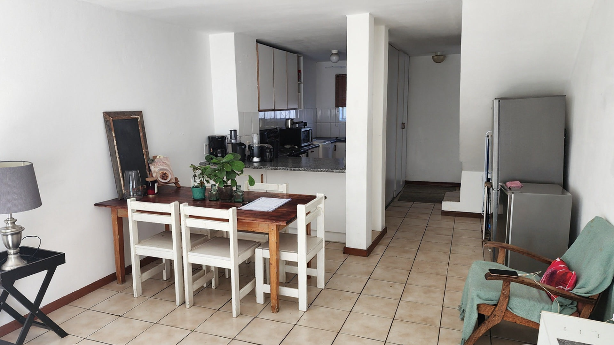
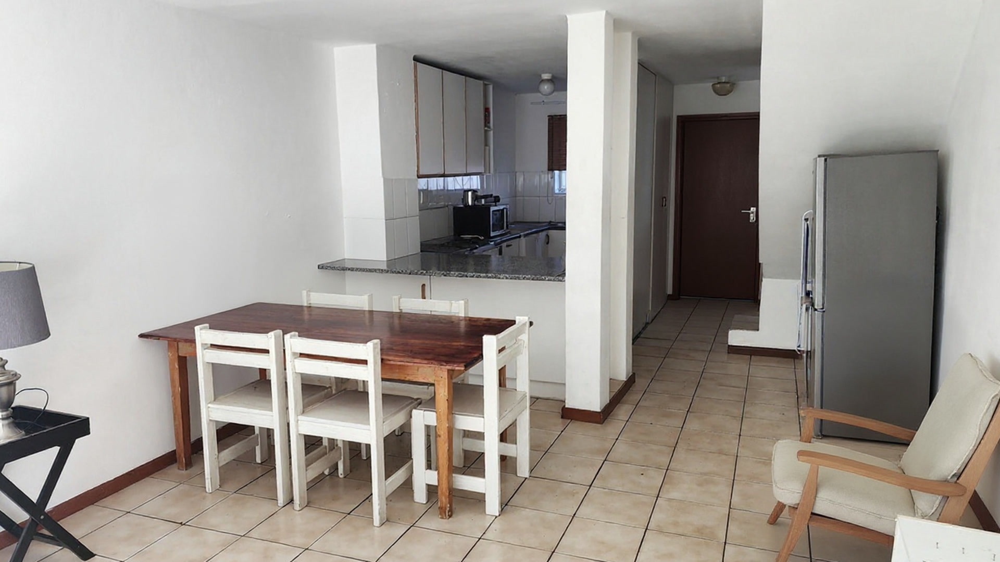
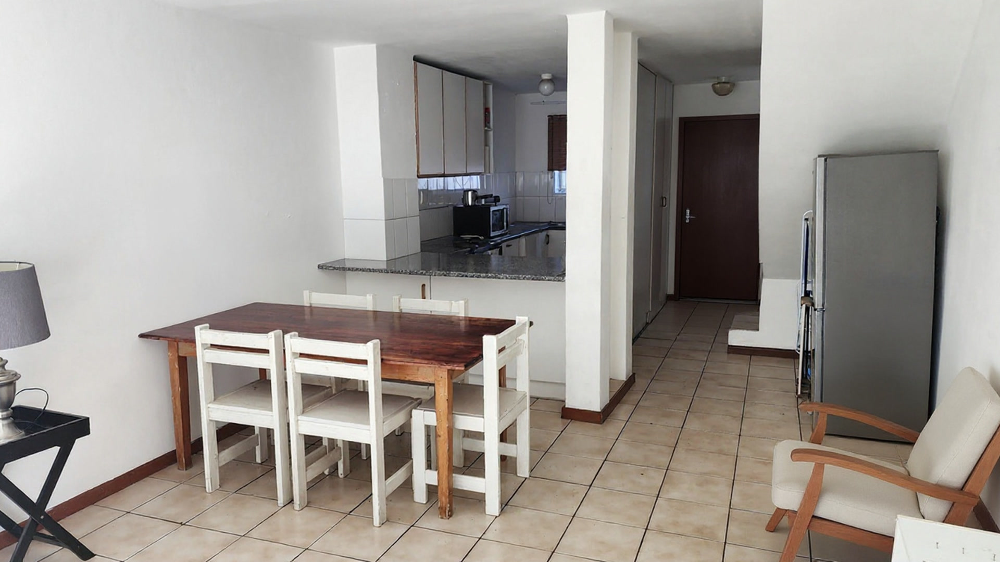
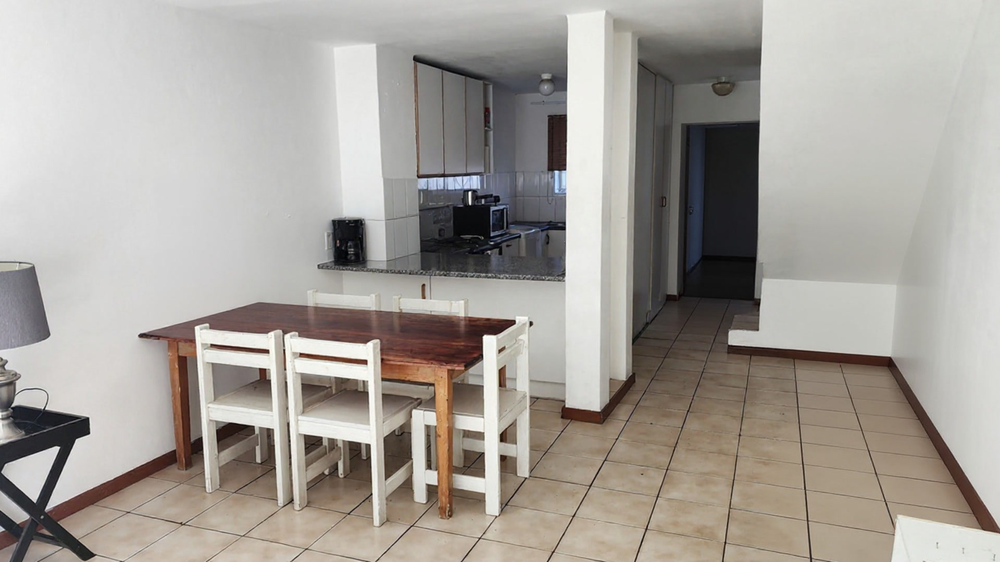
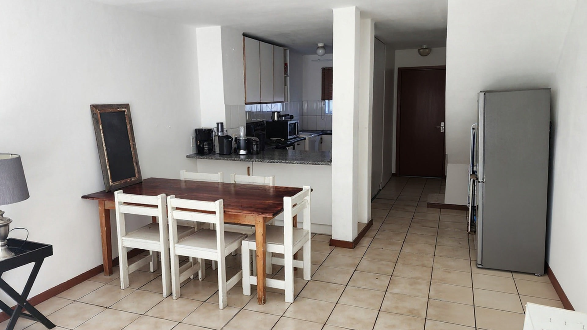

SOURCE — wide loft panorama

strength 0.55 (current default) — lockDiff 26.52, edgeDrift 7.18

strength 0.70 — lockDiff 26.39, edgeDrift 7.14

strength 0.85 — lockDiff 29.86, edgeDrift 7.15

strength 1.00 — lockDiff 26.54, edgeDrift 7.31